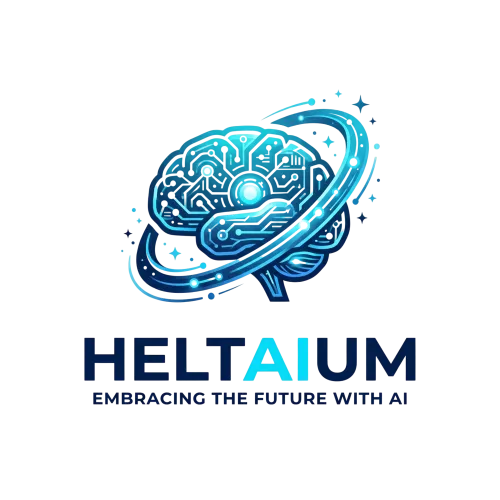

AI ChatBot Enterprise – Individuelle KI-Automatisierung für Onlineshops und größere Unternehmen
Produktprofil · Marktplatz-Daten 2026-10-14 · Verkaufsseiten-Recherche 2026-10-14 · Kategorien: Marketing Services
- AI ChatBot Enterprise – Individuelle KI-Automatisierung für Onlineshops und größere Unternehmen ist ein/e Elektronische Dienstleistung in Marketing Services, vertrieben über den Digistore24-Marktplatz von Anbieter Dani2002, gelistet seit 2026-05-25.
- Listenpreis $2797.00 (subscription) — Checkout, Auslieferung und Rückerstattungen laufen über Digistore24 selbst, nicht über den Anbieter.
- Käuferschutz: keine standardisierte Garantie-Formulierung gefunden — Rückerstattungsbedingungen vor der Zahlung auf der offiziellen Seite prüfen.
Interesse an AI ChatBot Enterprise – Individuelle KI-Automatisierung für Onlineshops und größere Unternehmen? Aktueller Preis, Boni und Garantiebedingungen finden Sie auf der offiziellen Seite des Anbieters:
Offizielle Verkaufsseite ansehen
Affiliate-Link (Werbung) — wir verdienen ggf. eine Provision, ohne Mehrkosten für Sie.

Marktplatz-Daten
| Produkttyp | Elektronische Dienstleistung |
|---|---|
| Preis | $2797.00 (Subscription) |
| Garantie/Rückgabe | Laut Verkaufsseite des Anbieters — vor dem Kauf auf der offiziellen Seite prüfen |
| Anbieter | Dani2002 (gelistet seit 2026-05-25) |
Marktplatz-Beschreibung des Anbieters
Der AI ChatBot Enterprise ist die individuelle Premium-Lösung für Onlineshops und größere Unternehmen. Er bindet CRM, ERP und Shop-System an, prüft Bestände, bearbeitet Retouren und Auftragsstatus, erstellt Tickets und löst automatisierte Workflows aus. Warum sich die Bewerbung lohnt: Höchster Warenkorb: 2.500 € einmalige Einrichtung + 500 € monatlich – Premium-Provision pro Sale 20 % Provision auf die Einrichtung UND auf jede monatliche Rate – starkes wiederkehrendes Einkommen Für anspruchsvolle Kunden mit echtem Automatisierungsbedarf 30 Tage Geld-zurück-Garantie senkt die Kaufhürde Ideale Zielgruppe für deine Werbung: Onlineshops, größere Unternehmen und Dienstleister mit vielen wiederkehrenden Kundenprozessen. Anbieter: HeltAIum – KI- und Automatisierungslösungen für Unternehmen.
Von der Verkaufsseite des Anbieters
Seitentitel: AI ChatBot Enterprise - Digistore24
Abschnitts-Überschriften
- AI ChatBot Enterprise
- AI ChatBot Enterprise – Die individuelle Komplettlösung für anspruchsvolle Kundenprozesse
- AI ChatBot Enterprise
- AI ChatBot Enterprise – Die individuelle Komplettlösung für anspruchsvolle Kundenprozesse
- AI ChatBot Enterprise
- AI ChatBot Enterprise – Die individuelle Komplettlösung für anspruchsvolle Kundenprozesse
Einstiegstext
Der AI ChatBot Enterprise ist die Premium-Lösung für Onlineshops, größere Unternehmen und Dienstleister mit vielen wiederkehrenden Kundenprozessen. Wir entwickeln und integrieren Ihren Chatbot als vollwertigen digitalen Mitarbeiter – tief verzahnt mit Ihren bestehenden Systemen.
✔ 30 Tage Geld-zurück-Garantie Sind Sie nicht zufrieden? Innerhalb von 30 Tagen nach Bestellung erstatten wir Ihnen den vollen Betrag – ohne Wenn und Aber.
Nach Ihrer Bestellung melden wir uns innerhalb von 24 Stunden bei Ihnen, um den Anforderungs-Workshop zu vereinbaren. Gemeinsam entwickeln wir aus Ihrem Chatbot eine echte Prozess-Automation, die Ihrem Team spürbar Arbeit abnimmt und gleichzeitig Ihre Kundenerfahrung deutlich verbessert.
Der AI ChatBot Enterprise ist die Premium-Lösung für Onlineshops, größere Unternehmen und Dienstleister mit vielen wiederkehrenden Kundenprozessen. Wir entwickeln und integrieren Ihren Chatbot als vollwertigen digitalen Mitarbeiter – tief verzahnt mit Ihren bestehenden Systemen.
Preisangaben auf der Seite: $10
Recherche-Methode: rohes HTML · 1003 Wörter · Qualität: rich · recherchiert am 2026-10-14. Vollständige Recherche-Datei (MD) ↗
Wie Produkte dieser Art geliefert werden
Allgemeiner Hinweis zu diesem Produkttyp (keine anbieterspezifische Anleitung): Remote-Dienstleistungen werden elektronisch erbracht — der Anbieter meldet sich nach dem Kauf. Für die genaue Anwendung von AI ChatBot Enterprise – Individuelle KI-Automatisierung für Onlineshops und größere Unternehmen sind die offizielle Verkaufsseite und die enthaltenen Materialien maßgeblich.
Gut zu wissen
- Hoher Preis: $2797.00 ist eine erhebliche Ausgabe — prüfen Sie, ob es einen Zahlungsplan gibt, und vergleichen Sie zuerst die günstigeren Alternativen der Kategorie.
- Keine Garantie-Formulierung in unserer Recherche gefunden — bestätigen Sie das Rückgabefenster auf der offiziellen Seite, bevor Sie kaufen.
Was ist AI ChatBot Enterprise – Individuelle KI-Automatisierung für Onlineshops und größere Unternehmen?
AI ChatBot Enterprise – Individuelle KI-Automatisierung für Onlineshops und größere Unternehmen ist ein/e elektronische dienstleistung in der Kategorie Marketing-Dienstleistungen des Digistore24-Marktplatzes, veröffentlicht von Anbieter Dani2002 und im Verkauf seit 2026-05-25. Der Anbieter beschreibt es so: "Der AI ChatBot Enterprise ist die individuelle Premium-Lösung für Onlineshops und größere Unternehmen. Er bindet CRM, ERP und Shop-System an, prüft Bestände, bearbeitet Retouren und Auftragsstatus, erstellt Tickets und löst automatisierte Workflows aus. Warum " (Marktplatz-Beschreibung des Anbieters, leicht gekürzt).
AI ChatBot Enterprise – Individuelle KI-Automatisierung für Onlineshops und größere Unternehmen Preis: was Sie zahlen
Der Marktplatz listet AI ChatBot Enterprise – Individuelle KI-Automatisierung für Onlineshops und größere Unternehmen zum $2797.00 Preis (subscription). Digistore24 fügt im Checkout die gesetzliche Steuer Ihres Landes hinzu — dort sehen Sie den Endbetrag vor der Zahlung. Die Verkaufsseite selbst nennt: $10 (Anbieteraussagen — verbindlich ist der Checkout-Betrag). Eine separate Plattformgebühr gibt es nicht; Anbieter können eigene Upsells nach dem Checkout anbieten.
AI ChatBot Enterprise – Individuelle KI-Automatisierung für Onlineshops und größere Unternehmen Rückerstattung und Geld-zurück-Garantie
Wir haben keine standardisierte Garantie-Formulierung auf der Verkaufsseite gefunden. Rückerstattungen für Digistore24-Käufe laufen über die Plattform: Antrag über den Support-Link in Ihrer Bestell-E-Mail, innerhalb des Garantiezeitfensters, das im Checkout angezeigt wird. Praktischer Rat: Entscheiden Sie innerhalb des Fensters — wenn das Produkt unter den Erwartungen bleibt, erstatten lassen statt irren lassen.
Mechanik im Detail: So funktionieren Digistore24-Rückerstattungen.
Für wen ist AI ChatBot Enterprise – Individuelle KI-Automatisierung für Onlineshops und größere Unternehmen geeignet?
Basierend auf der Marketing-Dienstleistungen-Einordnung und der subscription-Abrechnung richtet sich AI ChatBot Enterprise – Individuelle KI-Automatisierung für Onlineshops und größere Unternehmen an Käufer, die marketing-dienstleistungen-Lösungen suchen und ein Budget für einen Premium-Kauf eingeplant haben. Der ehrliche Test ist nicht die Kategorie, sondern Ihre eigene Situation: Werden Sie es realistisch innerhalb des Garantiefensters nutzen? Wenn ja, ist der Preis eine Investition; wenn nein, ist er Ballast — unabhängig von der Qualität.
Ist AI ChatBot Enterprise – Individuelle KI-Automatisierung für Onlineshops und größere Unternehmen seriös? Was Sie vor dem Kauf prüfen
Wir bewerten keine Seriosität — das kann niemand, ohne das Produkt zu nutzen. Prüfbare Punkte, alle auf dieser Seite: die Marktplatz-Historie des Anbieters (im Verkauf seit 2026-05-25), die wörtlichen Verkaufsseiten-Auszüge unten (gekennzeichnet als Anbieteraussagen — deren Werbung, nicht unsere Empfehlung), die Garantiebedingungen im Checkout und die Auslieferungsart. Vorsichtsignale bei jedem Angebot: Countdown-Dringlichkeit gepaart mit vagen Rückerstattungsbedingungen, Testimonials ohne Datum und Anbieterseiten, die den Preis bis zum Checkout verstecken.
Wie kommen Sie nach dem Kauf an AI ChatBot Enterprise – Individuelle KI-Automatisierung für Onlineshops und größere Unternehmen?
Der Checkout läuft über Digistore24. Nach der Zahlung: Remote-Dienstleistungen werden elektronisch erbracht — der Anbieter meldet sich nach dem Kauf. Bewahren Sie die Bestell-E-Mail auf — sie ist Ihr Schlüssel zum/d zur elektronische dienstleistung, zu Rückerstattungsanträgen und zum Digistore24-Käufersupport.
AI ChatBot Enterprise – Individuelle KI-Automatisierung für Onlineshops und größere Unternehmen Erfahrungen: so recherchieren Sie richtig
Die meisten „Erfahrungsberichte" zu Marktplatz-Produkten sind Affiliate-Inhalte — einschließlich Seiten wie dieser, die an Käufen mitverdienen. Behandeln Sie jeden Bericht (auch unseren) als Ausgangspunkt und prüfen Sie gegen Primärquellen: die Verkaufsseite des Anbieters, die Digistore24-Rückerstattungsrichtlinie und — für marketing-dienstleistungen — unabhängige Communities außerhalb des Affiliate-Ökosystems. Auf dieser Seite sind die Verkaufsseiten-Auszüge unten wörtlich zitiert, damit Sie die Aussagen des Anbieters bewerten können, ohne wegzuklicken.
Wie Sie AI ChatBot Enterprise – Individuelle KI-Automatisierung für Onlineshops und größere Unternehmen sicher kaufen
- Öffnen Sie die offizielle Verkaufsseite und lesen Sie das vollständige Angebot.
- Bestätigen Sie Endpreis und Garantiezeitfenster auf der Digistore24-Kassenseite — sie ist bindend, kein Vergleichsportal.
- Zahlen Sie innerhalb des Digistore24-Checkouts (niemals per Überweisung oder Off-Platform-Links).
- Speichern Sie die Bestellbestätigung; notieren Sie die Rückerstattungsfrist im Kalender.
- Prüfen Sie zügig. Der Digistore24-Käufersupport hilft, wenn der Anbieter nicht reagiert.
Vollständiges Recherche-Archiv für dieses Produkt (Markdown: kompletter Marktplatz-Datensatz + wörtliche Verkaufsseiten-Auszüge): AI ChatBot Enterprise – Individuelle KI-Automatisierung für Onlineshops und größere Unternehmen — Datenarchiv (.md).
- Listenpreis & Abrechnung — Quelle: offizielle Digistore24-Marktplatz-API, Stand 2026-10-14. Maßgeblich für den aktuellen Preis ist immer die Kassenseite.
- Verkaufsseiten-Zitate — Quelle: https://www.digistore24.com/product/691085, abgerufen 2026-10-14 (Methode: rohes HTML). Verify: offizielle Seite öffnen.
- Garantie / Rückgabe — vom Anbieter festgelegt; vor dem Kauf auf der Verkaufsseite bestätigen.
- Nicht von uns geprüft: Produktqualität, Ergebnisse, Testimonials — kein Praxistest für dieses Listing durchgeführt.
Häufige Fragen zu AI ChatBot Enterprise – Individuelle KI-Automatisierung für Onlineshops und größere Unternehmen
Antworten aus dem Marktplatz-Snapshot (2026-10-14) und der Verkaufsseiten-Recherche (2026-10-14); Anbieteraussagen sind inline gekennzeichnet.
Was ist AI ChatBot Enterprise – Individuelle KI-Automatisierung für Onlineshops und größere Unternehmen?
AI ChatBot Enterprise – Individuelle KI-Automatisierung für Onlineshops und größere Unternehmen ist ein Angebot des Typs „Elektronische Dienstleistung" im Digistore24-Marktplatz, Anbieter: Dani2002, gelistet seit 2026-05-25. Eingepflegt unter Marketing-Dienstleistungen. Digistore24 wickelt Checkout, Lieferung und Rückgaben ab.
Wie viel kostet AI ChatBot Enterprise – Individuelle KI-Automatisierung für Onlineshops und größere Unternehmen?
Der Digistore24-Marktplatz listet es für $2797.00 (subscription). Preise legt der Anbieter fest und können sich ändern — der Marktplatz-Eintrag oben zeigt den Schnappschuss; die offizielle Verkaufsseite zeigt den aktuellen Preis.
Gibt es eine Geld-zurück-Garantie für AI ChatBot Enterprise – Individuelle KI-Automatisierung für Onlineshops und größere Unternehmen?
Unsere Verkaufsseiten-Recherche hat keine explizite Garantie-Formulierung gefunden. Viele Digistore24-Produkte bieten 60 Tage Geld-zurück, aber das legt jeder Anbieter selbst fest — bestätigen Sie es auf der offiziellen Verkaufsseite, bevor Sie kaufen.
Ist AI ChatBot Enterprise – Individuelle KI-Automatisierung für Onlineshops und größere Unternehmen seriös?
Wir bewerten keine Seriosität — wir veröffentlichen überprüfbare Zahlen: Anbieter Dani2002 (gelistet seit 2026-05-25), mit der vollständigen Verkaufsseiten-Recherche archiviert auf dieser Seite (Anbieteraussagen als solche gekennzeichnet). Lesen Sie unsere 6-Punkte-Bewertungsmethode und entscheiden Sie anhand der Zahlen — oder diskutieren Sie AI ChatBot Enterprise – Individuelle KI-Automatisierung für Onlineshops und größere Unternehmen auf GitHub.
Gibt es Alternativen zu AI ChatBot Enterprise – Individuelle KI-Automatisierung für Onlineshops und größere Unternehmen?
Ja — die nächstähnlichen Angebote derselben Kategorie sind VERA-X AI-Business Engine™, ScaleX, Ein Produkt, das sich von selbst verkauft - 50% Provision. Details in der Vergleichstabelle oben bzw. auf der Alternativen-Seite mit allen Marktplatz-Zahlen.
Wo kann ich AI ChatBot Enterprise – Individuelle KI-Automatisierung für Onlineshops und größere Unternehmen sicher kaufen?
Nur über die offizielle Verkaufsseite, die auf dieser Seite verlinkt ist (Checkout und Rückgaben laufen über Digistore24). Prüfen Sie dort Preis und Garantie vor der Bestellung. Der Link ist ein Affiliate-Link — der Kauf unterstützt diese Website ohne Mehrkosten für Sie.
Wie erhalte ich AI ChatBot Enterprise – Individuelle KI-Automatisierung für Onlineshops und größere Unternehmen nach der Zahlung?
Der Checkout läuft über Digistore24: Nach der Zahlung erhalten Sie Zugangsdaten und Ihr Abo-Dashboard. Lieferdetails für diesen Produkttyp: Remote-Dienstleistungen werden elektronisch erbracht — der Anbieter meldet sich nach dem Kauf. Bei Problemen kann der Digistore24-Käufersupport Ihre Bestellung wiederherstellen.
Alle 50 Käuferfragen zu Marketing-Dienstleistungen — das komplette Kategorie-FAQ.
AI ChatBot Enterprise – Individuelle KI-Automatisierung für Onlineshops und größere Unternehmen auf Reddit diskutieren
In Community-Threads vergleichen echte Käufer Erfahrungen. Wir verlinken Communities, keine einzelnen Posts — Threads verschwinden, Subreddits bleiben:
- r/Unternehme — deutschsprachige Community mit Diskussionen zu marketing services.
- r/Vertrieb — deutschsprachige Community mit Diskussionen zu marketing services.
- Reddit-Suche nach „AI ChatBot Enterprise – Individuelle KI-Automatisierung für Onlineshops und größere Unternehmen" — Live-Ergebnisse, von uns nicht beeinflusst.
- Top-„Erfahrungs"-Treffer dieses Jahr — selbst nach Aktualität filtern.
Passendes auf Amazon.de
Physische Produkte und Zubehör, die häufig zusammen mit AI ChatBot Enterprise – Individuelle KI-Automatisierung für Onlineshops und größere Unternehmen gekauft werden:
- Marketing Bücher auf Amazon.de — Top-Ergebnisse, Amazon-Ranking.
- Bestseller: Marketing Bücher — live Liste von Amazon, von uns nicht kuratiert.
Werbung: Als Amazon-Partner verdient DigistorePicks DE an qualifizierten Käufen (Partner-tag adminstorede-21). Amazon setzt eigene Preise und Provisionen (niedrige einstellige Prozente — weit unter den 30–75% der Digistore24-Anbieter). Amazon ist ein Convenience-Angebot für Sachprodukte, kein Ersatz für das digitale Produkt oben.
Ähnliche Angebote in Marketing-Dienstleistungen

VERA-X AI Business Engine™ ist ein vollständig aufgebautes KI-Business-System für Unternehmen. Statt nur Software zu verkaufen, erhält der Kunde eine komplette


Bis zu 1.046 € Provision pro Empfehlung — mit einem Produkt, das sich von selbst verkauft. Stell dir vor, du empfiehlst ein Produkt, das nicht nur gut konvertie

Verdiene 50% Provision mit der #1 Masterclass für Online-Kurs-Business Promote das kostenlose Online Training „Online Kurse erstellen und passiv verkaufen mit K
Weitere Angebote von Dani2002

Der AI ChatBot Pro ist die Lösung für Unternehmen mit vielen Anfragen. Zusätzlich zu allen Basic-Funktionen bietet er Online-Terminbuchung (Google Kalender oder

Bewirb einen KI-Chatbot, den praktisch jedes kleine Unternehmen gebrauchen kann. Der AI ChatBot Basic beantwortet Kundenanfragen automatisch rund um die Uhr – h
Optionen vergleichen? AI ChatBot Enterprise – Individuelle KI-Automatisierung für Onlineshops und größere Unternehmen im Vergleich mit den nächsten Alternativen — Marktplatz-Zahlen direkt nebeneinander.
Wie schneidet AI ChatBot Enterprise – Individuelle KI-Automatisierung für Onlineshops und größere Unternehmen ab? (Marktplatz-Zahlen)
| Produkt | Typ | Preis | Provision | Checkout-CR* | Storno* | Verdienst/Verkauf |
|---|---|---|---|---|---|---|
| AI ChatBot Enterprise – Individuelle KI-Automatisierung für Onlineshops und größere Unternehmen | Elektronische Dienstleistung | $2797.00 | 20 % | — | — | $559.40 |
| VERA-X AI-Business Engine™ | Elektronische Dienstleistung | $13415.53 | 30 % | — | — | $4024.66 |
| ScaleX | Mitgliederbereich & Videokurs | $3356.40 | 50 % | — | — | $1678.20 |
| Ein Produkt, das sich von selbst verkauft - 50% Provision | Elektronische Dienstleistung | $2341.02 | 50 % | — | — | $1170.51 |
| OKA - Online Kurs Autopilot Masterclass | Mitgliederbereich & Videokurs | $2250.76 | 50 % | — | — | $1125.38 |
Entscheidungsfaktoren für Käufer
- Funktion: Checkout-Konversion und Anbieter-Bilanz vergleichen — beide in der Tabelle oben.
- Passung: Typ und Voraussetzungen (Lieferformat, Vorkenntnisse) in jedem Profil prüfen.
- Wartung: Die Stornoquote ist das Kaufreue-Signal; Nutzungsbedingungen stehen auf den offiziellen Seiten.
- After-Sales: Garantie-Formulierung und Support — vor dem Kauf auf offiziellen Seiten verifizieren.
* Anbieter-seitige Statistiken; abhängig von der Traffic-Qualität, keine Prognose. Vollständiger Kontext: Alternativen-Seite zu AI ChatBot Enterprise – Individuelle KI-Automatisierung für Onlineshops und größere Unternehmen.
Ähnliche Preislage in Marketing-Dienstleistungen

Professionelle ESHOP erstellen ��� mit WP WooCommerce“ Nur mit 2.499 € Basic Paket #0 Eshop in Woocommerce or Shopify erstellen mit kostenlosen Themes #1 Eshop

Online-Kurs Masterclass – bewirb ein digitales Produkt mit starkem Nachfrage-Thema Die Online-Kurs Masterclass zeigt Selbstständigen, Experten, Coaches, Dienstl

ESHOP ERSTELLEN voll funktionsfähigen ” Professionelle Basic Shopify Eshop “ Nur mit 1.799 € #1 Eshop in Shopify erstellen voll funktionsfähig #2 Verknüpfen mit

Tage der Entscheidung – Erfolgreich LEBEN DEIN Seminar, wenn es um deine persönliche Weiterentwicklung geht. Lerne an nur 2,5 Tagen, wie du erreichbare Ziele se
Ähnliche Suchanfragen
Wo Sie es sich ansehen können
Wo Sie es sich ansehen können
Aktuelle Preise, Garantie und Boni finden Sie auf der offiziellen Verkaufsseite:
Offizielle Verkaufsseite ansehen
Das ist ein Affiliate-Link (Werbung) — kaufen Sie darüber, verdienen wir ggf. eine Provision, ohne Mehrkosten für Sie.
Quellen & weiterführende Informationen
- Offizielle Verkaufsseite (aktueller Preis, Garantie, Boni): www.digistore24.com/product/691085 (Affiliate-Link)
- Öffentliche Digistore24-Produktseite: checkout-ds24.com/product/691085
- Vollständige Recherche-Datei (Markdown, versioniert): content/products/56673-ai-chatbot-enterprise-individuelle-ki-automatisierung-f-r-onlineshops-und-gr-ere-unternehmen.md
- Marktplatz-Kategorie: Marketing-Dienstleistungen
Wie wir Produkte wie AI ChatBot Enterprise – Individuelle KI-Automatisierung für Onlineshops und größere Unternehmen bewerten
Sechs Prüfungen, ausschließlich mit offiziellen Marktplatz-Zahlen. Die vollständige Bewertungsmethode lesen · unsere Recherche-Standards & Kennzeichnung.
Fragen oder eigene Erfahrungen mit AI ChatBot Enterprise – Individuelle KI-Automatisierung für Onlineshops und größere Unternehmen?
Praxis-Tests veröffentlichen wir erst, nachdem wir ein Produkt selbst gekauft haben — aber Ihre Erfahrung hilft anderen Lesern: Diskussion zu AI ChatBot Enterprise – Individuelle KI-Automatisierung für Onlineshops und größere Unternehmen auf GitHub starten/verfolgen. Falsche Zahl gefunden? Korrektur melden — jede Seite zeigt ihre Datenstände, Korrekturen gelten für die ganze Website.